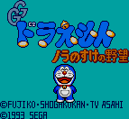

Doraemon - Game Gear Games

- Company: Sega
- Date Released: 29 April 1993
- Price (in yen): 3500
- Genre: Platform game
Controls
- A button: Shoot
- B button: Jump
- Start: Pause
Nara no Suke is a name, and YABOU means ambition. The name is a pun
on the popular game Nobunaga's Ambition. This is why the second no is
smaller than the first.
Anime Video Game Resource Center © 1998 by Luis A. Cruz